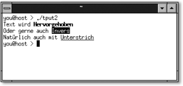

|
|
|
 5.2.3 Der Befehl printf
|
|||||||||||||||||||||||||||||||||||||||||||||||||||||||||||||||||||||||||||||||||||||||||||||||||||||||||||||||||||||||||||||||||||||||||||||||||||||||||||||||||||||||||||||||||||||||||||||||||||||||||||||||||||||||||||||||||||||||||||||||||||||||||||||||||||||||||||||||||||||||||||||||||||||||||||||||||||||||||||||||||||||||||||||||||||||||||||||||||||||||||||||||||||||||||||||||||||||||||||||||||||||||||||||||||||||||||||||||||||||||||||||||||||||||||||||||||||||||||||||||||||||||||||||||||||||||||||||||||||||||||||||||||||||||||||||||||||||||||
| Zeichenmuster | Typ | Beschreibung |
| %c | Zeichen | Gibt ein Zeichen entsprechend dem Parameter aus. |
| %s | Zeichenkette | Gibt eine Zeichenkette beliebiger Länge aus. |
| %d oder %i | Ganzzahl | Gibt eine Ganzzahl mit Vorzeichen aus. |
| %u | Ganzzahl | Gibt eine positive Ganzzahl aus. Negative Werte werden dann in der positiven CPU-Darstellung ausgegeben. |
| %f | reelle Zahl | Gibt eine Gleitpunktzahl aus. |
| %e oder %E | reelle Zahl | Gibt eine Gleitpunktzahl in der Exponentialschreibweise aus. |
| %x oder %X | Ganzzahl | Gibt eine Ganzzahl in hexadezimaler Form aus. |
| %g oder %G | reelle Zahl | Ist der Exponent kleiner als –4, wird das Format %e verwendet, ansonsten %f. |
| %% | Prozentzeichen | Gibt das Prozentzeichen aus. |
Hier ein einfaches Beispiel, wie Sie eine Textdatei mit folgendem Format
you@host > cat bestellung.txt J.Wolf::10::Socken P.Weiss::5::T-Shirts U.Hahn::3::Hosen Z.Walter::6::Handschuhe
in lesbarer Form formatiert ausgeben lassen können:
# Demonstriert den printf-Befehl # aprintf1 FILE=bestellung.txt TRENNER=:: for data in `cat $FILE` do kunde=`echo $data | tr $TRENNER ' '` set $kunde printf "Kunde: %-10s Anzahl: %-5d Gegenstand: %15s\n" $1 $2 $3 done
Das Script liest zunächst zeilenweise mit cat aus der Textdatei bestellung.txt ein. Nach do werden die Trennzeichen »::« durch ein Leerzeichen ersetzt und mittels set auf die einzelnen Positionsparameter $1, $2 und $3 verteilt. Diese Positionsparameter werden anschließend mit printf als Argument für die Zeichenmuster verwendet. Das Script bei der Ausführung:
you@host > ./aprintf1 Kunde: J.Wolf Anzahl: 10 Gegenstand: Socken Kunde: P.Weiss Anzahl: 5 Gegenstand: T-Shirts Kunde: U.Hahn Anzahl: 3 Gegenstand: Hosen Kunde: Z.Walter Anzahl: 6 Gegenstand: Handschuhe
Wie Sie im Beispiel außerdem sehen, können hierbei auch die Escape-Sequenzen wie \n usw. im Formatstring verwendet werden. Ein Vorteil ist es zugleich, dass Sie in der Bash die Escape-Zeichen ohne eine Option wie –e bei echo anwenden können.
Im Beispiel wurde beim Formatstring das Zeichenmuster mit einer erweiterten Angabe formatiert. So können Sie zum Beispiel durch eine Zahlenangabe zwischen % und dem Buchstaben für das Format die minimale Breite der Ausgabe bestimmen. Besitzt ein Argument weniger Zeichen, als Sie mit der minimalen Breite vorgegeben haben, so werden die restlichen Zeichen mit einem Leerzeichen aufgefüllt.
Auf welcher Seite hier mit Leerzeichen aufgefüllt wird, hängt davon ab, ob sich vor der Ganzzahl noch ein Minuszeichen befindet. Setzen Sie nämlich noch ein Minuszeichen vor die Breitenangabe, wird die Ausgabe linksbündig justiert.
Hier können Sie noch näher spezifizieren, indem Sie einen Punkt hinter der Feldbreite gefolgt von einer weiteren Ganzzahl verwenden. Dann können Sie die Feldbreite von der Genauigkeit trennen (siehe anschließendes Beispiel). Bei einer Zeichenkette definieren Sie dabei die Anzahl von Zeichen, die maximal ausgegeben werden. Bei einer Fließkommazahl wird hiermit die Anzahl der Ziffern nach dem Komma definiert und bei Ganzzahlen die minimale Anzahl von Ziffern, die ausgegeben werden sollen – wobei Sie niemals eine Ganzzahl wie etwa 1234 durch %.2d auf zwei Ziffern kürzen können. Verwenden Sie hingegen eine größere Ziffer, als die Ganzzahl Stellen erhält, werden die restlichen Ziffern mit Nullen aufgefüllt. Hier ein Script, das die erweiterten Formatierungsmöglichkeiten demonstrieren soll:
# Demonstriert den printf-Befehl # aprintf2 text=Kopfstand a=3 b=12345 printf "|01234567890123456789|\n" printf "|%s|\n" $text printf "|%20s|\n" $text printf "|%-20s|\n" $text printf "|%20.4s|\n" $text printf "|%-20.4s|\n\n" $text printf "Fließkommazahl: %f\n" $a printf "gekürzt : %.2f\n" $a printf "Ganzzahl : %d\n" $b printf "gekürzt : %.2d\n" $b printf "erweitert : %.8d\n" $b
Das Script bei der Ausführung:
you@host > ./aprintf2 |01234567890123456789| |Kopfstand| | Kopfstand| |Kopfstand | | Kopf| |Kopf | Fließkommazahl: 3,000000 gekürzt : 3,00 Ganzzahl : 12345 gekürzt : 12345 erweitert : 00012345
Häufig will man neben der gewöhnlichen Ausgabe auch das Terminal oder den Bildschirm steuern: etwa den Bildschirm löschen, Farben verwenden oder die Höhe und Breite des Bildschirms ermitteln. Dies und noch vieles mehr können Sie mit tput realisieren. tput ist übrigens auch ein eigenständiges Programm (kein Builtin) und somit unabhängig von der Shell. Zum Glück kennt tput die Terminalbibliothek terminfo (früher auch /etc/termcap), in der viele Attribute zur Steuerung des Terminals abgelegt sind. Dort finden Sie eine Menge Funktionen, von denen Sie hier nur die nötigsten kennen lernen. Einen umfassenderen Einblick können Sie über die entsprechende Manual-Page von terminfo gewinnen.
Wie sieht ein solcher Eintrag in terminfo aus? Verwenden wir doch als einfachstes Beispiel clear, womit Sie den Bildschirm des Terminals löschen können.
you@host > tput clear | tr '\033' 'X' ; echo X[HX[2J
Hier erhalten Sie die Ausgabe der Ausführung von clear im Klartext. Es muss allerdings das Escape-Zeichen (\033) durch ein »X« oder Ähnliches ausgetauscht werden, weil ein Escape-Zeichen nicht darstellbar ist. Somit lautet der Befehl zum Löschen des Bildschirms hier:
\033[H\033[2J
Mit folgender Eingabe könnten Sie den Bildschirm löschen:
you@host > echo '\033[H\033[2J'
oder in der Bash:
you@host > echo -en '\033[H\033[2J'
Allerdings gilt dieses Beispiel nur, wenn »echo $TERM« die xterm ist. Es gibt nämlich noch eine Reihe weiterer Terminaltypen, weshalb Sie mit dieser Methode wohl nicht sehr weit kommen werden – und dies ist auch gar nicht erforderlich, da es hierfür ja die Bibliothek terminfo mit der Funktion tput gibt. Die Syntax von tput lautet:
tput Terminaleigenschaft
Wenn Sie sich die Mühe machen, die Manual-Page von terminfo durchzublättern, so finden Sie neben den Informationen zum Verändern von Textattributen und einigen steuernden Terminal-Eigenschaften auch Kürzel, mit denen Sie Informationen zum aktuellen Terminal abfragen können.
| Kürzel | Bedeutung |
| cols | Aktuelle Anzahl der Spalten |
| lines | Aktuelle Anzahl der Zeilen |
| colors | Aktuelle Anzahl der Farben, die das Terminal unterstützt. |
| pairs | Aktuelle Anzahl der Farbenpaare (Schriftfarbe und Hintergrund), die dem Terminal zur Verfügung stehen. |
Diese Informationen lassen sich in einem Script folgendermaßen ermitteln:
# Demonstriert den tput-Befehl # tput1 spalten=`tput cols` zeilen=`tput lines` farben=`tput colors` paare=`tput pairs` echo "Der Typ des Terminals $TERM hat im Augenblick" echo " + $spalten Spalten und $zeilen Zeilen" echo " + $farben Farben und $paare Farbenpaare"
Das Script bei der Ausführung:
you@host > ./tput1 Der Typ des Terminals xterm hat im Augenblick + 80 Spalten und 29 Zeilen + 8 Farben und 64 Farbenpaare
Zum Verändern der Textattribute finden Sie in tput ebenfalls einen guten Partner. Ob hervorgehoben, invers oder unterstrichen, auch dies ist mit der Bibliothek terminfo möglich. Tabelle 5.6 nennt hierzu einige Kürzel und deren Bedeutung.
| Kürzel | Bedeutung |
| bold | Etwas hervorgehobenere (fette) Schrift |
| boldoff | Fettschrift abschalten |
| blink | Text blinken |
| rev | Inverse Schrift verwenden |
| smul | Text unterstreichen |
| rmul | Unterstreichen abschalten |
| sgr0 | Alle Attribute wiederherstellen (also normale Standardeinstellung) |
Auch zu den Textattributen soll ein Shellscript geschrieben werden:
# Demonstriert den tput-Befehl
# tput2
fett=`tput bold`
invers=`tput rev`
unterstrich=`tput smul`
reset=`tput sgr0`
echo "Text wird ${fett}Hervorgehoben${reset}"
echo "Oder gerne auch ${invers}Invers${reset}"
echo "Natürlich auch mit ${unterstrich}Unterstrich${reset}"
Das Script bei der Ausführung:
|
 Abbildung 5.1 Ein Script mit veränderten Textattributen |
Wenn Ihnen tput colors mehr als den Wert 1 zurückgibt, können Sie auch auf Farben zurückgreifen. Meistens handelt es sich dabei um acht Farben. Je acht Farben für den Hintergrund und acht für den Vordergrund ergeben zusammen 64 mögliche Farbenpaare, welche Sie mit
# Vordergrundfarbe setzen tput setf Nummer # Hintergrundfarbe setzen tput setb Nummer
aktivieren können. Für Nummer können Sie einen Wert zwischen 0 und 7 verwenden, wobei die einzelnen Nummern gewöhnlich den folgenden Farben entsprechen:
| Nummer | Farbe |
| 0 | Schwarz |
| 1 | Blau |
| 2 | Grün |
| 3 | Gelb |
| 4 | Rot |
| 5 | Lila |
| 6 | Cyan |
| 7 | Grau |
In der Praxis können Sie die Farben zum Beispiel dann so einsetzen:
# Demonstriert den tput-Befehl
# tput3
Vgruen=`tput setf 2`
Vblau=`tput setf 1`
Hschwarz=`tput setb 0`
Hgrau=`tput setb 7`
reset=`tput sgr0`
# Farbenpaar Schwarz-Grün erstellen
Pschwarzgruen=`echo ${Vgruen}${Hschwarz}`
echo $Pschwarzgruen
echo "Ein klassischer Fall von Schwarz-Grün"
echo ${Vblau}${Hgrau}
echo "Ein ungewöhnliches Blau-Grau"
# Alles wieder Rückgängig machen
echo $reset
Natürlich finden Sie in der Bibliothek terminfo auch steuernde Terminal-Eigenschaften, nach denen häufig bevorzugt gefragt wird. Mit steuernden Eigenschaften sind hier Kürzel in terminfo gemeint, mit denen Sie die Textausgabe auf verschiedensten Positionen des Bildschirms erreichen können.
| Kürzel | Bedeutung |
| home | Cursor auf die linke obere Ecke des Bildschirms setzen |
| cup n m | Cursor auf die n-te Zeile in der m-ten Spalte setzen |
| dl1 | Aktuelle Zeile löschen |
| il1 | Zeile an aktueller Position einfügen |
| dch1 | Ein Zeichen in der aktuellen Position löschen |
| clear | Bildschirm löschen |
Zu guter Letzt noch ein Shellscript, das Ihnen diese Funktionen zum Steuern des Terminals demonstrieren soll.
# Demonstriert den tput-Befehl
# tput4
Dline=`tput dl1` # Zeile löschen
Iline=`tput il1` # Zeile einfügen
Dscreen=`tput clear` # Bildschirm löschen
# Bildschirm löschen
echo $Dscreen
tput cup 9 10
echo "------------------------------"
tput cup 10 10
printf "|%28s|" ""
tput cup 11 10
printf "|%5s Ein Teststring %7s|" " " " "
tput cup 12 10
printf "|%28s|" ""
tput cup 13 10
echo "------------------------------"
# Kurze Pause
sleep 2
tput cup 11 10
# Zeile löschen
echo $Dline
sleep 2
tput cup 11 10
printf "${Iline}|%7s neuer String %7s|" " " " "
sleep 2
echo $Dscreen
|
Hinweis Dieser Abschnitt stellt natürlich nur einen kurzen Einblick in die Funktionen von terminfo dar. Die Funktionsvielfalt (bei einem Blick auf die Manual-Page) ist erschlagend, dennoch werden Sie in der Praxis das meiste nicht benötigen, und für den Hausgebrauch sind Sie hier schon recht gut gerüstet. |
Wie hat Ihnen das <openbook> gefallen? Wir freuen uns immer über Ihre freundlichen und kritischen Rückmeldungen.
>> Zum Feedback-Formular| << zurück |
|
||||||||||||
|
||||||||||||
|
||||||||||||
Copyright © Rheinwerk Verlag GmbH 2005
Für Ihren privaten Gebrauch dürfen Sie die Online-Version natürlich ausdrucken. Ansonsten unterliegt das <openbook> denselben Bestimmungen, wie die gebundene Ausgabe: Das Werk einschließlich aller seiner Teile ist urheberrechtlich geschützt. Alle Rechte vorbehalten einschließlich der Vervielfältigung, Übersetzung, Mikroverfilmung sowie Einspeicherung und Verarbeitung in elektronischen Systemen.


 bestellen
bestellen